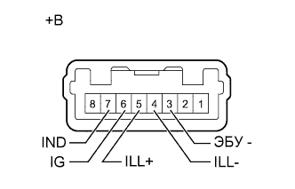

ГЛАВНЫЙ ВЫКЛЮЧАТЕЛЬ СИСТЕМЫ УЛЬТРАЗВУКОВОЙ ЛОКАЦИИ > ПРОВЕРКА |
| 1. ПРОВЕРЬТЕ ВЫКЛЮЧАТЕЛЬ ЗАДНЕГО УЛЬТРАЗВУКОВОГО ЛОКАТОРА ИЛИ СИСТЕМЫ УЛЬТРАЗВУКОВОЙ ЛОКАЦИИ |
|  |
Проверьте сопротивление.
Измерьте сопротивление в соответствии со значениями, приведенными в таблице ниже.
| Контакты для подключения диагностического прибора | Положение переключателя | Заданные условия |
| 3 (ECU) - 6 (IG) | Выключатель системы ультразвуковой локации выключен | 10 кОм или более |
| Выключатель системы ультразвуковой локации включен | Менее 1 Ом |
Проверьте работу индикатора.
| Условия измерений | Заданные условия |
| Положительный (+) вывод аккумуляторной батареи → контакт 3 (ECU) Отрицательный (-) вывод аккумуляторной батареи → контакт 7 (IND) | Светодиод светится |
Проверьте работу подсветки.
| Условия измерений | Заданные условия |
| Положительный (+) вывод аккумуляторной батареи → контакт 5 (ILL+) Отрицательный (-) вывод аккумуляторной батареи → контакт 4 (ILL-) | Светодиод светится |
| *a | Устройство с неподсоединенным жгутом проводов (выключатель заднего ультразвукового локатора или системы ультразвуковой локации) |